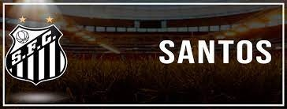

Sobre o Santos F.C
Fundado no dia 12 de abril de 1912, na rua do rosário, por um grupo de jovens idealistas, formou-se o nobre relicário do futebol, o Santos F.C. Predestinado a momentos memoráveis, o Alvinegro traz consigo uma história singular, rica e irrepreensível, repleta de grandes conquistas construídas por craques e gênios incontestáveis.
Com um legado de contribuições ao futebol, a gloriosa história do Santos que tem a Vila Belmiro (estádio Urbano Caldeira) como palco de façanhas, tornando-a um alçapão e templo do futebol, mostra também momentos de superação e reinvenção perante algumas adversidades, principalmente, nos períodos iniciais. No Amadorismo e início profissional, gerações de craques passam a ser praxes do clube, surgem as dinastias de 1916-19, 1927-31, 1935-36 e 1948-50. Na década de 1950, a Alquimia Santista dá fruto a uma geração histórica (1955-1959) que deu início ao momento de ouro do clube e do país.
O Maior Clube do Século XX nas Américas (FIFA) mostra uma filosofia particular de produzir craques, assim apresentou ao mundo o maior jogador de todos os tempos (Pelé) e tantas outras lendas. Se rejuvenescer e renovar o futebol com grandes equipes (1973-74, 1983-84, 1995) e reinventa-se no esplendor das gerações de Meninos da Vila (1978-79, 2002-04, 2010-12, 2015-16). Na descrição da confederação sudamericana (Conmebol) o time do “jogo bonito” com “uma história de craques, títulos e futebol arte”.
Títulos Conquistados
- 2 Mundiais de clubes
- 3 Libertadores
- 8 Campeonatos Brasileiros
- 1 Copa do Brasil
- 1 Recopa Sul-Americana
- 22 Campeonatos Estaduais